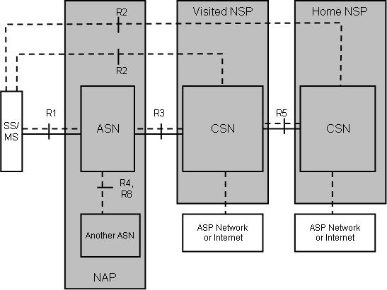
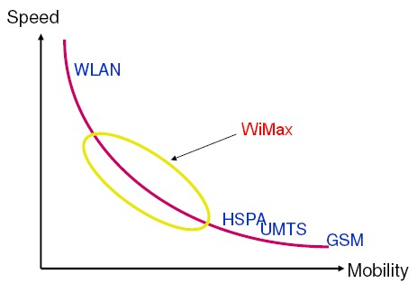

Онлайн-конспект по теме "Беспроводные технологии" для учеников 11-ых классов.
WMAN — беспроводные сети масштаба города. Предоставляют широкополосный доступ к сети через радиоканал.
Стандарт IEEE 802.16, опубликованный в апреле 2002 года, описывает wireless MAN Air Interface.
802.16 — так называемая технология «последней мили», использующая диапазон частот от 10 до 66 ГГц. Так как это сантиметровый и миллиметровый диапазон, то необходимым условием является прямая видимость между антеннами приёмопередающих устройств. Стандарт поддерживает топологию point-to-multipoint, технологии frequency division duplex (FDD) и time division duplex (TDD), с поддержкой quality of service (QoS). Возможна передача звука и видео. Стандарт определяет пропускную способность 120 Мбит/с на каждый канал в 25 МГц.
Для соединения базовой станции с абонентской используется высокочастотный диапазон радиоволн 1,5 до 11 ГГц. В идеальных условиях скорость обмена данными может достигать 70 Мбит/с, при этом не требуется обеспечения прямой видимости между базовой станцией и приемником.
Стандарт 802.16a последовал за стандартом 802.16. Он был опубликован в апреле 2003 и использует диапазон частот от 2 до 11 ГГц. Стандарт поддерживает ячеистую топологию (mesh networking) и не требует прямой видимости.
Отдельного упоминания заслуживает внедряемая технология WiMAX:
WiMAX — это система дальнего действия, покрывающая километры пространства, которая обычно использует лицензированные спектры частот (хотя возможно и использование нелицензированных частот) для предоставления соединения с Интернетом типа точка-точка провайдером конечному пользователю. Разные стандарты семейства 802.16 обеспечивают разные виды доступа, от мобильного (схож с передачей данных с мобильных телефонов) до фиксированного (альтернатива проводному доступу, при котором беспроводное оборудование пользователя привязано к местоположению).

